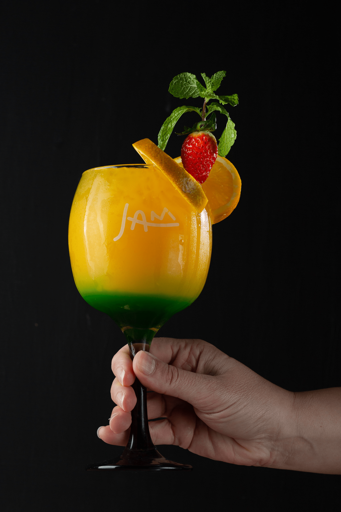
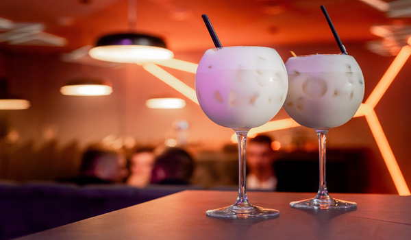
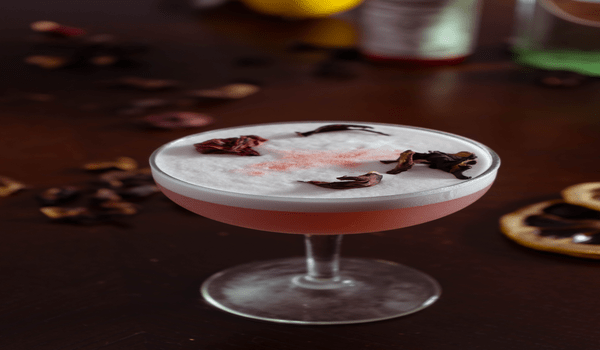
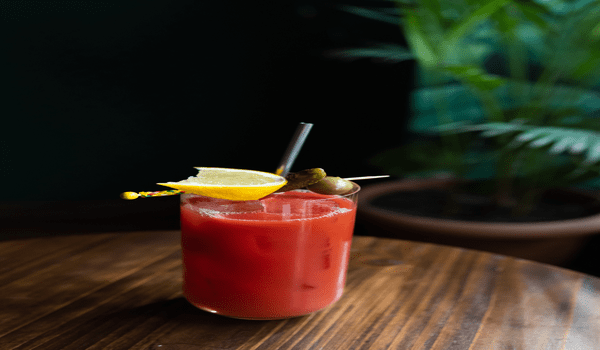
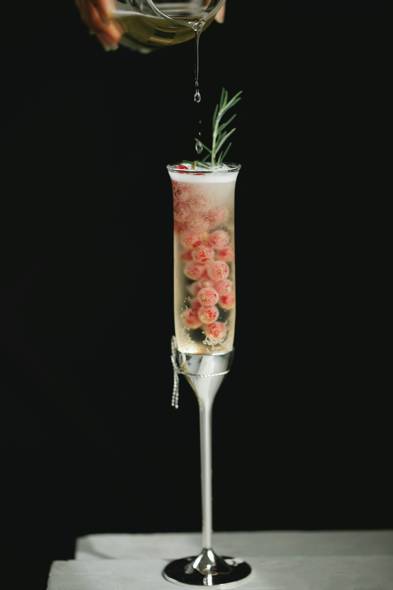
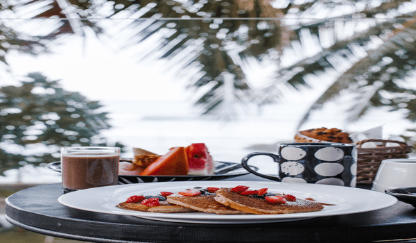
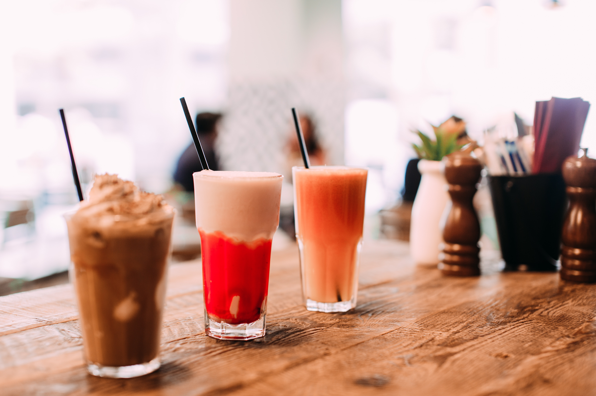
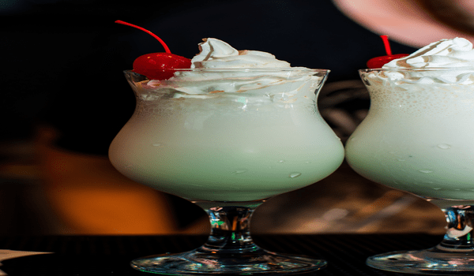
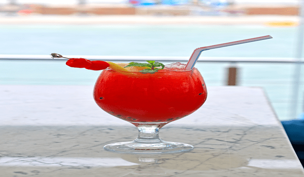
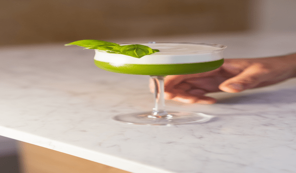

Tu Espacio

Crema de maracuya
la crema de maracuya es un postre delicioso que puedes degustar despues de cualquier platilo;
La pectina presente en el maracuyá es un tipo de fibra que tiene la capacidad de formar geles. Es beneficiosa para la industria de jaleas, así como para la digestión y la eliminación de residuos del organismo.
invitacion
Fresco de aguacate...
crema de viche...
crema de maracuya...
pipilongo...
crema de naidi...
arrechon... tomaseca...
crema de viche...
crema de maracuya...
pipilongo...
crema de naidi...
arrechon... tomaseca...

TomaSeca
Una de las variedades es la -Tomaseca de diversión-, esa bebida que lleva 40 hierbas.
“Para elaborarla hay que escoger 40 plantas que van a la cábala y llevan un proceso de fermentación. Esta Tomaseca es mixta, la pueden tomar hombres y mueres que busquen mejor función –sonríe-, porque limpia el vientre, tonifica, vitaliza y nutre”.
fruto medicinal por su alto contenido antioxidante y porque sube la hemoglobina

Crema de naidí
Una de las recetas típicas en Timbiquí, es el zumo o el-pepiado-
Naidí llaman los habitantes de la costa pacífica del Cauca (Colombia) los frutos de Euterpe oleracea, una palma originaria de Suramérica de distribución tropical y subtropical. En la región del Amazonas de Brasil el naidí se conoce como acaí.
Tu Espacio

Sabajon
Sabajones hay muchos, naturales, tropicales, de mora, café o feijoa.
Esta bebida es muy popular por su sabor dulce y cremoso, similar al Eggnog de Estados Unidos y al Ron Pope mexicano; aunque realmente nació como un postre italiano

Chirrinche
característico de la Región Caribe
El Chirrinche es una bebida obtenida de la fermentación de la miel de la caña de azúcar y forma parte de las bebidas típicas del departamento de La Guajira.

Cocoloco
se podría decir que el Coco Loco es primo hermano de la piña colada, pues comparten bastantes ingredientes, se preparan de forma similar y, sobre todo, ambos utilizan la crema de coco,
El agua de coco es una bebida natural con un alto contenido en potasio y otras sales minerales (como por ejemplo es el caso del magnesio, fósforo, sodio y calcio), lo que la convierten en una bebida isotónica muy útil para prevenir la deshidratación, calmar nuestra sed o rehidratarnos en caso de determinadas enfermedades.

Invitacion
Tumbacatre
Chirrinche...
Jugo de Corozo...
cocoloco...
crema o licor de cacao...
sabajon...
crema crema de orujo...
soda italiana...
Chirrinche...
Jugo de Corozo...
cocoloco...
crema o licor de cacao...
sabajon...
crema crema de orujo...
soda italiana...
Tu Espacio

Arrechon
La crema de viche como también se le conoce al Arrechón, afrodisiaco natural, bebida típica del pacifico, refiere a un potenciador sexual preparada a base de Viche,
Esta bebida artesanal conocida como el Arrechón, está hecha de tomaseca (ingrediente clave), borojó, canela, clavos de olor y licor de caña de azúcar o viche, denominado así en la costa pacífica

Pipilongo
Pipilongo, un condimento ancestral que cautiva el paladar;
Afrodisiaco, aromatizado y vibrante
una pócima mágica para quienes buscan un afrodisiaco con poderes curativos

Soda italiana
bebida fría hecha con agua carbonatada y jarabe de sabor, es una infusión de frutos o extractos.-Masala Chai. Es un té aromático, la versión tradicional india lleva especias calientes como el cardamomo, clavo, anís, jengibre y canela.
Crema de Chantillí
es el betún ideal par agregar cremosidad a nuestros postres. Este suelo prepararlo para rellenar, cubrir y decorar mis postres. Existen diferentes maneras de prepararlo pero, una de mis recetas favoritas es combinarlo con queso crema.
Es una crema que debe estar siempre refrigerada y tiene una duración aproximada de 8 días
Tu Espacio

Crema chantillí
es el betún ideal par agregar cremosidad a nuestros postres. Este suelo prepararlo para rellenar, cubrir y decorar mis postres. Existen diferentes maneras de prepararlo pero, una de mis recetas favoritas es combinarlo con queso crema.
Es una crema que debe estar siempre refrigerada y tiene una duración aproximada de 8 días

Crema de Orújo
La crema de orujo es una bebida de aproximadamente 15 grados, dulce y concentrada, ideal para servirla durante la sobremesa, junto con el café.
El orujo, también conocido como aguardiente de orujo, es la bebida alcohólica destilada procedente del hollejo de uva. En ocasiones, de forma más genérica, se llama también orujo a cualquier tipo de aguardiente.

Jugo de Corozo
elaborado con la fruta emblemática de la Región Caribe
El uso de esta fruta es muy común en la Región Caribe,
El corozo posee propiedades antioxidantes, previniendo el envejecimiento prematuro y el deterioro de células, también tiene efectos terapéuticos
una bebida extremadamente refrescante

Fresco de aguacate
Sorprendentemente delicioso y refrescante. La gracia es que esté muy frió, el aguacate batido con la leche le aporta suavidad.
Tu Espacio
Crema o licor de cacao
El licor de cacao contiene% de almidón 6-8. Las gachas de molienda mayoría de los granos de almidón se destruye. Tal almidón se ha gelatinizado y capacidad de hinchamiento aumentado a temperaturas más bajas.
El licor de cacao o de chocolate es un licor hecho a partir de masa de cacao, que son granos de cacao que han sido secados, tostados, fermentados, molidos y prensados. El licor de cacao es uno de los ingredientes principales en la elaboración del chocolate. Se suele servir con el postre, nunca como aperitivo, y también se suele mezclar en cócteles

Cóctel MaiTai-jarabe almendras
Almendras y café se unen en perfecta armonía en el popular cóctel conocido como el cóctel de almendras tostadas. Es una delicia cremosa
Las almendras contienen una cantidad interesante de fibra: «30 g de almendras proporcionan 3 g de fibra, o casi el 10% de las contribuciones diarias recomendadas

Crema de Viche
Bebida afrodisiaca que se obtiene a partir de la mezcla del viche con chontaduro y borojó
Es reconocida por su gran poder y efectividad, se dice que luego de consumirla empieza a hacer efectos creativos en la persona, es así como la consideran un viagra natural.
TumbaCatre
elaborada a base de viche con borojó, canela, anís y el secreto de la abuela. Esta preparación es también considerada una vitamina, que ayuda a subir las defensas.